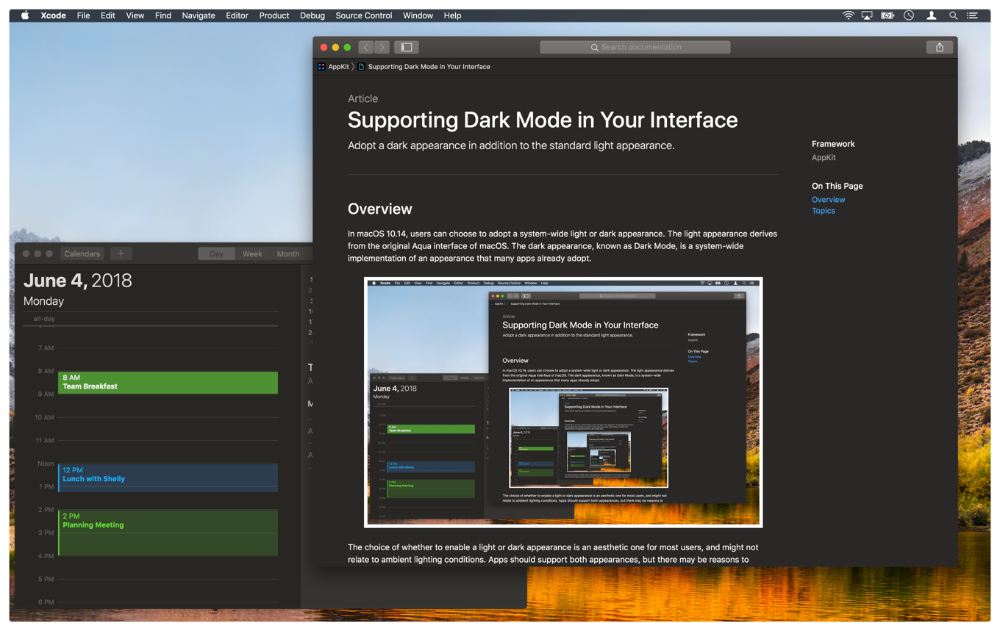
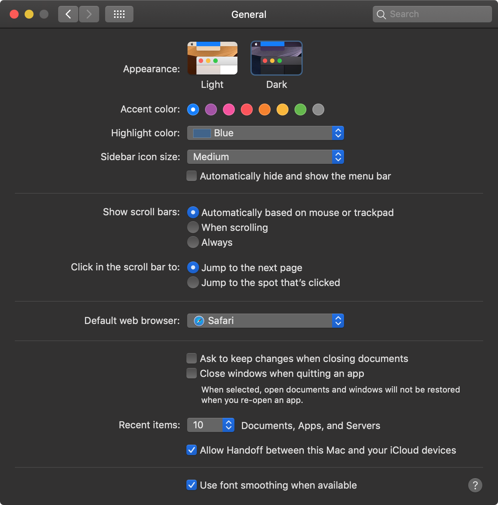
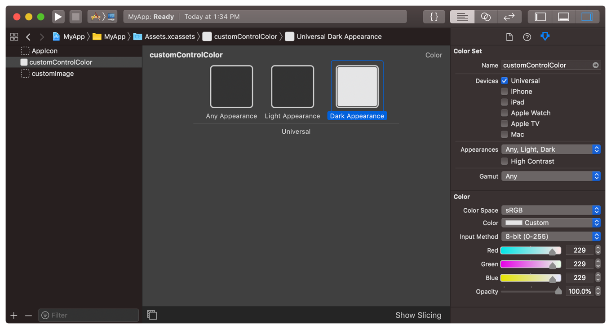

Command+Eye 05
Supporting Dark Mode in Your Interface
Adopt a dark appearance in addition to the standard light appearance.
Overview
In macOS 10.14, users can choose to adopt a system-wide light or dark appearance. The light appearance derives from the original Aqua interface of macOS. The dark appearance, known as Dark Mode, is a system-wide implementation of an appearance that many apps already adopt.
The choice of whether to enable a light or dark appearance is an aesthetic one for most users, and might not relate to ambient lighting conditions. Apps should support both appearances, but there may be reasons to support one appearance over another. For example, even in Dark Mode, you may want to adopt a light background for printed content.
Before making any changes to your app, always turn on Dark Mode and see how your app responds. AppKit does a lot of work for you, such as automatically updating standard views and controls to match the system appearance. For custom views, there are ways to implement your views that allow them to adapt naturally to both light and dark appearances as well. For example, if you use the recommended AppKit colors, those colors update automatically. If you hard-code colors and images in your custom views, you’ll need to make changes to support both light and dark appearances.
Choose Colors that Adapt
The light and dark appearances use very different color palettes. If your app uses hard-coded color values, those values may be inappropriate when switching to a dark appearance. However, there are two simple ways to address color issues:
- Use a semantic color defined by the NSColor class. Semantic colors let you specify colors based on their intended usage, rather than on the actual color. Examples include labelColor, controlColor, and controlBackgroundColor. For a complete list, see NSColor.
- Add custom colors to your asset catalog.
Use semantic colors when mixing your custom views and controls with standard AppKit views. Semantic colors ensure that your custom views have a similar appearance to the other views in your interface.
When you can’t use a semantic color, specify your color in an asset catalog. Use the appearance pop-up menu to configure whether your Color Set asset has custom slots for light and dark appearances. Colors in the Light Appearance and Dark Appearance slots are available only on macOS 10.14 and later. To specify the color for earlier versions of macOS, use the Any Appearance slot.
To load a color value from an asset catalog, use code like:
let aColor = NSColor(named: NSColor.Name("customControlColor"))
You do not have to recreate asset-based color objects when the current appearance changes. Each time you set the fill or stroke color for drawing, NSColor applies the appropriate color value from the asset catalog. Similarly, you do not need to recreate any of the predefined color objects that AppKit provides, such as labelColor. However, you do need to recreate color objects containing hard-coded component values, if those colors would be affected by appearance changes.
Note
For the user's content, always preserve colors that the user explicitly chooses. For example, a painting app should not try to change colors that the user applies to their canvas. Adaptable colors are intended primarily for the chrome of your app's custom views and controls.
Create Images for Dark Appearances
Check the images in your interface to make sure they look good in both light and dark appearances. You can include images in buttons, image views, or custom views and controls. If an image is difficult to see when changing appearances, provide a new image asset that looks good in the other appearance.
For information on how to configure images for both light and dark interfaces, see Providing Images for Different Appearances.
Update Custom Views Using Established Methods
When the current appearance changes, AppKit automatically asks each window and view to redraw itself. For custom views, AppKit calls one or more of the following methods:
- updateLayer()
- draw(_:)
- layout()
- updateConstraints()
As long as you update your view from one of these methods, your view will have a chance to update itself when the appearance changes. Be aware that you might need to perform tasks in these methods that you might have previously performed elsewhere. For example, instead of setting the background color of your view’s layer at creation time, you now need to put that code in your view’s updateLayer() method, as shown in Listing 2. Although the NSColor object in the following example updates automatically, the background color of the layer does not. As a result, you need to assign an updated CGColor explicitly.
Choose Visual Effect Materials Based on the Intended Usage
You use NSVisualEffectView objects to give depth to your interface. Typically, you use a visual effect view as a background view, placing other content such as labels and controls inside it. You also choose a material for your visual effect view. Materials determine the amount of translucency and blending imparted by the visual effect view onto your content.
Always choose materials based on their defined usage, not based on how those materials look. For example, when using a visual effect view as the background of a popover, choose the NSVisualEffectView.Material.popover material. Materials adapt automatically to the system appearance, including light and dark changes. You do not have to change materials manually.
Important
Do not use the NSVisualEffectView.Material.light, NSVisualEffectView.Material.dark, NSVisualEffectView.Material.mediumLight, or NSVisualEffectView.Material.ultraDark materials in macOS 10.14 and later. These materials do not change to match the system appearance and their use is deprecated.
For more information about using visual effect views in your interface, see NSVisualEffectView.
Opt Out When Appropriate
Whether you adopt both light and dark appearances is an aesthetic choice; however, you are encouraged to support both. If your design requires opting out of one appearance, you can tell AppKit which appearance you want to use. For example, you might adopt a dark appearance for your app at all times because it highlights your content better. You might also adopt a light appearance for user documents or printable content.
You can configure all or part of your interface to opt out of a specific appearance. You can also adopt a specific appearance for your entire app. For more information about how to make these changes, see Choosing a Specific Appearance for Your App.